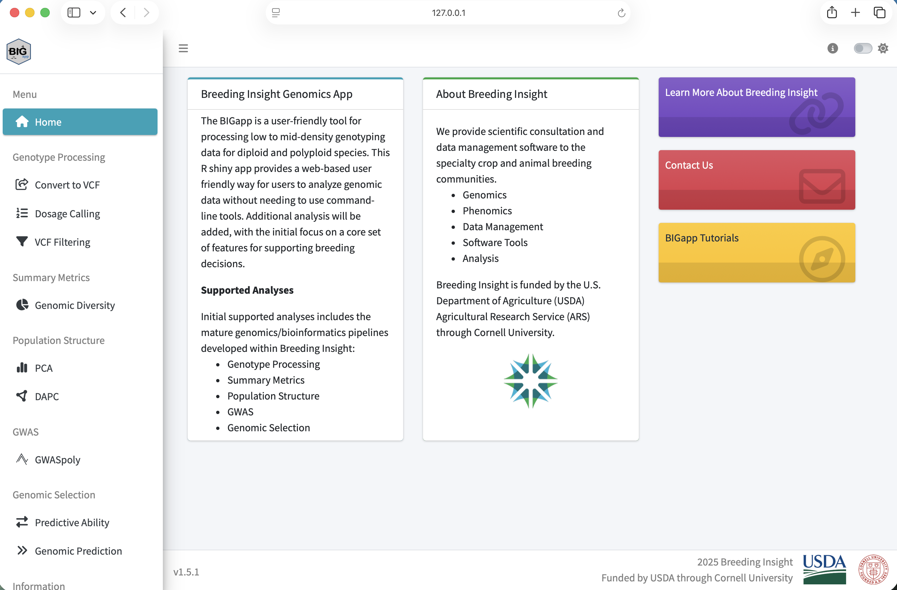

Setup for the BIGapp Workshop
Complete this check before the workshop
Setup at a glance
- When: complete before the guided session
- Goal: start BIGapp on your own computer
- You need: R 4.4.0 or later and internet access for installation
- Pass condition: the workshop VCF loads in local BIGapp
We will run every workshop analysis in a local BIGapp installation. Installation can take time because BIGapp depends on several R and Bioconductor packages, so complete this page before the guided session.
1. Install R
Install R 4.4.0 or later from the Comprehensive R Archive Network. After installation, open the R console or RStudio and check the version:
R.version.stringIf the reported version is older than 4.4.0, update R before continuing.
2. Install BIGapp
In a fresh R session, run the installation commands from the official BIGapp repository:
if (!requireNamespace("BiocManager", quietly = TRUE)) {
install.packages("BiocManager")
}
install.packages("remotes")
BiocManager::install(
"Breeding-Insight/BIGapp",
dependencies = TRUE
)R will also install the required dependencies. If it asks whether to update old packages, review the prompt and follow the policy used for your computer or organization.
3. Start BIGapp locally
Run this command in R each time you want to start the application:
BIGapp::run_app()BIGapp opens in a web browser, but the R process on your computer is doing the analysis. Keep that R session running and leave the console window open.
When you are finished, return to the R console and press Esc in RStudio or Ctrl+C in a terminal.
Confirm that the left navigation includes VCF Filtering, PCA, GWASpoly, Predictive Ability, and Genomic Prediction.

The public BIGapp preview can be used to look at the interface before installation. It is not the workshop analysis environment. Run every upload, filter, PCA, GWASpoly, and genomic-selection exercise in your local installation.
4. Download the example files
Save all three files in one folder. Do not extract the compressed VCF.
| Download | Expected contents |
|---|---|
| Genotype VCF | 1,200 variants and 200 samples |
| Phenotype CSV | 200 records plus a header |
| SNP-information CSV | 1,200 records plus a header |
The dataset guide provides checksums, field definitions, simulation details, and expected results.
5. Run the required preflight check
- Start local BIGapp with
BIGapp::run_app()if it is not already running. - In BIGapp, open Genotype Processing and select VCF Filtering.
- Under Choose VCF File, browse to
atlantic_giant_pumpkin_diversity.vcf.gz. - Wait for the upload progress indicator to finish.
- Confirm that the file is accepted without a malformed-VCF message.
The VCF upload completes and the Quality Filtering inputs remain available. You do not need to select Apply Filters yet. This confirms that the required local installation and teaching file are ready.
Troubleshooting
Confirm that the filename still ends in .vcf.gz and that your browser did not rename or extract it. Download the local copy again, restart BIGapp locally, and retry.
Restart R, record R.version.string, and retain the complete installation error. Search existing BIGapp issues before opening a new one. On macOS, compiled dependencies may also require the current Xcode command line tools.
For maintained requirements and release instructions, consult the official BIGapp README.
Next: After the local preflight passes, continue to Module 1: Data quality control.